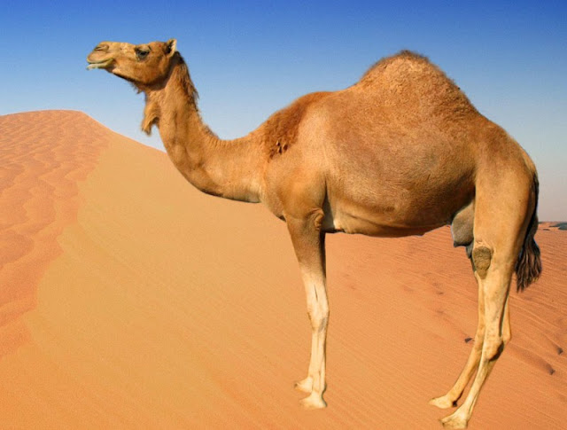
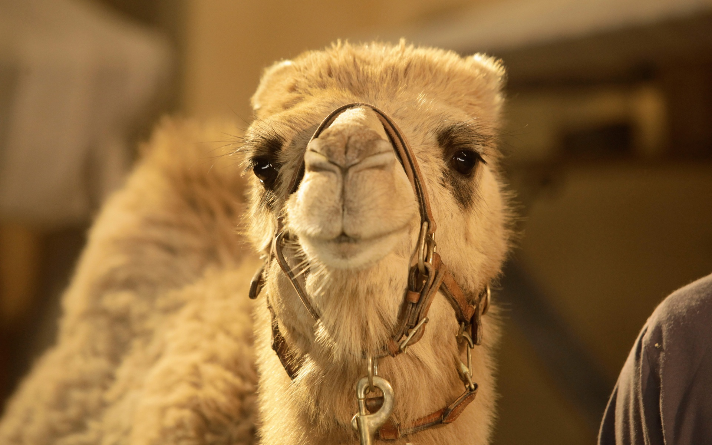

Kameler wohoo
- Slekten Camelus omfatter kamel – med to pukler – (Camelus bactrianus) og dromedar (Camelus dromedarius).
- Kamelen finnes primært i området fra Midtøsten til Kina. Dromedaren er mest utbredt i Nord-Afrika og de arabiske landene. Begge kan bli to meter høye, veie opptil 650 kg og bli 40 år.
- Den ville kamelen er truet. Den største bestanden – under 1000 – lever i Gobiørkenen. Det finnes ikke ville dromedarer, men det er en forvillet bestand på ca. 15 000 i Australia. Den ble innført der som pakkdyr på 1800-tallet.
- Kameler og dromedarer er tilpasset ørkenlivet og kan gå opptil ti måneder uten vann. Til gjengjeld kan de drikke over 100 liter vann på 5–10 minutter. De kan også drikke brakkvann og til og med saltvann.
- Kamelveddeløp arrangeres primært med dromedarer og er – særlig på Arabiahalvøya – en svært utviklet industri med egne avlsprogrammer og treningsfasiliteter.

